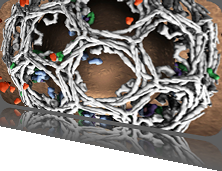

5th Symposium on Biological Data Visualization
10- 11 July // Dublin, Ireland @ ISMB/ECCB 2015
10- 11 July // Dublin, Ireland @ ISMB/ECCB 2015

Data Contest
Similarity of resting-state functional brain networks
- Identify networks of intrinsic functional connectivity derived from repeated scans of a group of individuals
- Determine network features that form reliable signatures for an individual and those that vary across the population or differentiate between individuals
- Develop new tools and new collaborations to help neuroscientists and clinicians understand the utility of resting state networks as reliable phenotypes
- Create new methods to illuminate and tap into the information currently hidden in large emerging neurobiological datasets including the Human Connectome Project
- Win prizes and get published at BioVis 2014
The Contest: The 2014 BioVis contest focuses on the domain of resting state functional connectivity networks (rs-fMRI networks), which are derived from functional magnetic resonance imaging scans of human subjects. These networks reflect intrinsic, low-frequency correlations between the blood oxygenation level dependent (BOLD) activity time series measured in different regions of the brain, and are thought to provide information about functionally relevant neural circuits and large-scale functional brain architecture.
This contest challenges interested participants to develop methods for comparing a large set of networks derived from rs-fMRI, each of which consists of nodes representing spatially localized brain regions and edges reflecting the strengths of functional connections between pairs of regions. The specific goal of the contest is to develop visualization methods that that help identify and understand which rs-fMRI networks, from a large provided dataset, are replicates derived from the same individuals.
Comparing Networks: Establishing methods for comparing individual networks based on the similarity of either local (i.e., individual edge weights) or global (i.e., whole-network graph theoretic measures) properties is at the heart of potential applications of rs-fMRI. While purely algorithmic/analytical methods have provided some scientific and clinical insights, particularly at the group level, it remains unknown to what extent network structures are universal and to what extent individual differences have meaning across the population. Despite a recent surge in interest in this domain and the adoption of tools from machine learning and graph theory, visualization and exploration of the structure of rs-fMRI networks in individual subjects, and in comparison to the population, remains relatively unsophisticated. Improving these techniques thus is a critical step for advancing the field.
The “functional connections” represented in rs-fMRI networks are distinct from, but related to, anatomical connections (i.e., fiber pathways) that link neurons in different areas of the brain. When the brain is imaged during the “resting state” (i.e., while subjects aren’t engaged in any specific task), a relatively consistent pattern of correlations is observed, including for example, the “default mode network,” which comprises a set of coupled brain regions that tend to be more active at rest than during specific tasks. Still, while network structure shows some consistency across the population, the potential power of rs-fMRI lies at the individual level, enabling the study of how functional brain architecture is associated with individual behavioral, genetic, or clinical variables.
Provided Data: Resting state fMRI networks contain nodes that correspond to locations in individual brains, and thus there is a notion of physical space not always present in other networks (i.e., gene or protein interaction networks). In this contest, data will be provided in the form of weighted adjacency matrices, with each row / column corresponding to one such physical location (node) and each edge corresponding to the strength of coupling between two locations, averaged across the time of the scan. By using a standard fMRI template approach (with the template provided in the contest data), nodes from individual subjects will correspond to the same (or similar) anatomical regions, whereas the individual coupling strengths (edges) will vary across subjects. A visualization tool that allows researchers to examine how individual networks relate to one another along various functional pathways and network-level features, and how a large set of individual-specific networks clusters, would have tremendous potential impact as increasing numbers of rs-fMRI datasets become publicly available.
Data Contest Chairs
For details about the symposium or to discuss any aspects of your submission please communicate with the Contest Chairs:
- Raghu Machiraju, The Ohio State University, USA
- William Ray, The Ohio State University, USA
- Jason Bohland, Boston University, USA
You can email us via contest@biovis.net.
BioVis 2014 is an official SIG of ISMB

BioVis 2014 Supporters
Platinum:

Silver:


We also acknowledge the support by BMC.